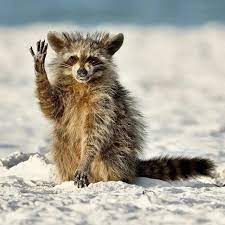

Зоопарк



Наши обитатели — гордость зоопарка 😊
- Енот — мохнатый и вонючий
- Олень — любит фотографироваться
- Коала — любит жрать бамбук
Любим весёлые праздники для семьи
Наш зоопарк — это место, где дети и взрослые могут познакомиться с удивительным миром животных в безопасной и увлекательной обстановке. Мы регулярно проводим интерактивные программы: «Кормление слонов», «Встреча с попугаями», «Ночь в зоопарке» — и всегда рады гостям всех возрастов. Наши сотрудники — настоящие профессионалы, которые любят животных и хотят поделиться этой любовью с вами. Приходите всей семьёй — здесь каждый найдёт занятие по душе: от прогулок до мастер-классов по рисованию животных. У нас даже есть свой питомец-посланник — Джон, который встречает гостей у входа и делает фото на память!